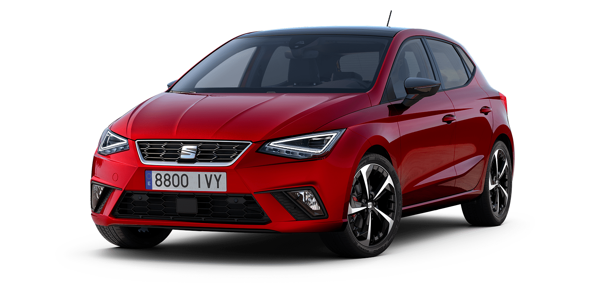

Mire se erdhet tek Makinat Familjare
Ketu do i gjeni disa makina familjare qe i ofron AutoSalloni jone.Shpresojme te ju pelqejne.
BMW X7
BMW X7 është një SUV luksoz dhe i madhësisë së plotë, ideal për familje që kërkojnë rehati dhe hapësirë.
Me kapacitet deri në 7 pasagjerë, kjo veturë ofron sedilje të rehatshme, hapësirë të madhe bagazhi dhe teknologji të avancuar për siguri, si sistemet e asistencës në drejtim dhe parkim automatik.
X7 është e pajisur me motorra të fuqishëm, duke ofruar një kombinim të shkëlqyer të performancës dhe stabilitetit në udhëtime të gjata familjare. Përvoja luksoze dhe komoditeti e bëjnë një zgjedhje premium për familje të mëdha. Viti i prodhimit: 2020
Qmimi per BMW X7: 75.000
Me kapacitet deri në 7 pasagjerë, kjo veturë ofron sedilje të rehatshme, hapësirë të madhe bagazhi dhe teknologji të avancuar për siguri, si sistemet e asistencës në drejtim dhe parkim automatik.
X7 është e pajisur me motorra të fuqishëm, duke ofruar një kombinim të shkëlqyer të performancës dhe stabilitetit në udhëtime të gjata familjare. Përvoja luksoze dhe komoditeti e bëjnë një zgjedhje premium për familje të mëdha. Viti i prodhimit: 2020
Qmimi per BMW X7: 75.000
Tiguan

Tiguan është një SUV i madhësisë mesatare që shquhet për prakticitetin dhe funksionalitetin familjar. Me një brendësi të gjerë dhe të adaptueshme, Tiguan ofron hapësirë të mjaftueshme për 5 pasagjerë dhe bagazh të bollshëm për pajisje familjare.
Teknologjia moderne si "IQ.Drive" për siguri dhe sistemet argëtuese e bëjnë të përshtatshme për udhëtime familjare.
Konsumi i karburantit është i ulët për një SUV, dhe sistemi 4MOTION opsional siguron stabilitet në çdo terren.Viti i prodhimit:2018
Qmimi per Tiguan: 20.000
Teknologjia moderne si "IQ.Drive" për siguri dhe sistemet argëtuese e bëjnë të përshtatshme për udhëtime familjare.
Konsumi i karburantit është i ulët për një SUV, dhe sistemi 4MOTION opsional siguron stabilitet në çdo terren.Viti i prodhimit:2018
Qmimi per Tiguan: 20.000
Seat Ibiza

SEAT Ibiza është një veturë kompakte që, megjithëse e vogël, është e përshtatshme për familje të vogla ose përdorim urban. Me 5 ulëse dhe një bagazh relativisht të bollshëm për klasën e saj, Ibiza është ideale për udhëtime brenda qytetit ose dalje të shkurtra familjare.
Konsumi i karburantit është shumë i ulët, duke e bërë atë ekonomik për mirëmbajtje.
Teknologjia e brendshme përfshin lidhjen me smartphone dhe sisteme ndihmëse për drejtimin, duke e bërë praktike dhe të sigurt për familjet.Viti i prodhimit:2010
Qmimi per Seat Ibiza:8.000
Konsumi i karburantit është shumë i ulët, duke e bërë atë ekonomik për mirëmbajtje.
Teknologjia e brendshme përfshin lidhjen me smartphone dhe sisteme ndihmëse për drejtimin, duke e bërë praktike dhe të sigurt për familjet.Viti i prodhimit:2010
Qmimi per Seat Ibiza:8.000
Golf 8
Volkswagen Golf 8 është një hatchback familjar modern dhe i gjithanshëm. Me hapësirë të mjaftueshme për 5 pasagjerë dhe një bagazh funksional, Golf 8 është i përshtatshëm për përdorim të përditshëm familjar.
Është i pajisur me teknologji si ekran dixhital dhe sisteme të avancuara për asistencën në drejtim, që shtojnë sigurinë për familje.
Konsumi i karburantit është i ulët, dhe versionet hibride ofrojnë kursime edhe më të mëdha. Golf 8 kombinon stilin modern me prakticitetin për familje të vogla.Viti i prodhimit:2019
Qmimi per Golf 8: 35.000
Është i pajisur me teknologji si ekran dixhital dhe sisteme të avancuara për asistencën në drejtim, që shtojnë sigurinë për familje.
Konsumi i karburantit është i ulët, dhe versionet hibride ofrojnë kursime edhe më të mëdha. Golf 8 kombinon stilin modern me prakticitetin për familje të vogla.Viti i prodhimit:2019
Qmimi per Golf 8: 35.000
Seat Taraco
SEAT Tarraco është një SUV i madh dhe ekonomik, projektuar për familje që kërkojnë rehati dhe prakticitet. Me mundësinë për 7 vende, Tarraco ka hapësirë të mjaftueshme për gjithë familjen dhe bagazhin.
Është e pajisur me teknologji të sigurisë si sistemi i ndihmës për frenimin emergjent dhe mbajtjen në korsinë e drejtimit. Brendësia është moderne dhe funksionale, duke ofruar komoditet për udhëtime të gjata.
Tarraco kombinon dizajnin elegant me funksionalitetin për përdorim të përditshëm familjar.Viti i prodhimit:2022
Qmimi per Seat Tarraco:39.000
Është e pajisur me teknologji të sigurisë si sistemi i ndihmës për frenimin emergjent dhe mbajtjen në korsinë e drejtimit. Brendësia është moderne dhe funksionale, duke ofruar komoditet për udhëtime të gjata.
Tarraco kombinon dizajnin elegant me funksionalitetin për përdorim të përditshëm familjar.Viti i prodhimit:2022
Qmimi per Seat Tarraco:39.000
Range Rover

Range Rover është një SUV luksoz dhe i fuqishëm që përshtatet shkëlqyeshëm për nevojat familjare. Me hapësirë të bollshme për 5 pasagjerë dhe një bagazh të madh, kjo veturë është ideale për udhëtime të gjata ose aventura familjare.
Kabina ofron rehati të jashtëzakonshme me sedilje të veshura në lëkurë dhe sisteme argëtimi për pasagjerët. Përveç luksit, sistemi i tërheqjes 4x4 dhe opsionet për motorrat ekonomikë sigurojnë stabilitet dhe kursime gjatë përdorimit të përditshëm.
Range Rover është zgjedhja perfekte për familje që kërkojnë komoditet, siguri dhe stil të klasit të lartë.Viti i prodhimit:2020
Qmimi per Range Rover:30.000
Kabina ofron rehati të jashtëzakonshme me sedilje të veshura në lëkurë dhe sisteme argëtimi për pasagjerët. Përveç luksit, sistemi i tërheqjes 4x4 dhe opsionet për motorrat ekonomikë sigurojnë stabilitet dhe kursime gjatë përdorimit të përditshëm.
Range Rover është zgjedhja perfekte për familje që kërkojnë komoditet, siguri dhe stil të klasit të lartë.Viti i prodhimit:2020
Qmimi per Range Rover:30.000